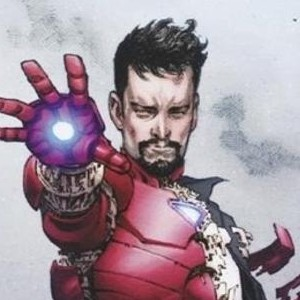
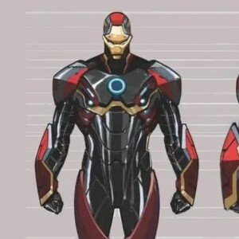

Quem ele é?

suas as armaduras
sobre os vilões

Quem ele é?

suas as armaduras
sobre os vilões

O Homem de Ferro Superior (Superior Iron Man) é uma versão corrompida, narcisista e implacável de Tony Stark na Terra-616. Origem Essa persona surgiu durante o evento nos quadrinhos Eixo (AXIS), quando um feitiço de inversão moral — lançado para deter o Caveira Vermelha — alterou a personalidade dos heróis e vilões. Enquanto os efeitos em massa foram desfeitos mais tarde, Tony se protegeu com um escudo de energia e manteve sua essência moral invertida em segredo. Ele se libertou de qualquer empatia, abraçando uma postura fria, egocêntrica e com forte complexo de deus. Ações em São Francisco Mudando-se para São Francisco, o Homem de Ferro Superior iniciou um plano de dominação psicológica e comercial: • Extremis 3.0: Ele lançou um aplicativo gratuito que oferecia beleza, saúde física e cura por meio de um tecnovírus. • A Cobrança: Após viciar a população, ele tirou a gratuidade e passou a cobrar uma fortuna diária para manter os usuários "perfeitos", chantageando quem recusasse. • Oposição: Ele enfrentou figuras como Pepper Potts (com a armadura Resgate), o Demolidor e uma inteligência artificial reserva do próprio Tony Stark original. A Armadura Endo-Sym (Modelo 50) Sua marca registrada é a armadura Endo-Sym, feita de metal líquido inteligente inspirado em biotecnologia de simbiontes: • Controle Mental: A massa metálica é armazenada nas células de Tony e responde diretamente aos seus pensamentos, fundindo-se instantaneamente ao seu corpo. • Resistência Avançada: Diferente de simbiontes comuns (como o Venom), ela não possui fraqueza a sons altos ou fogo, além de ser extremamente resistente e capaz de se regenerar.